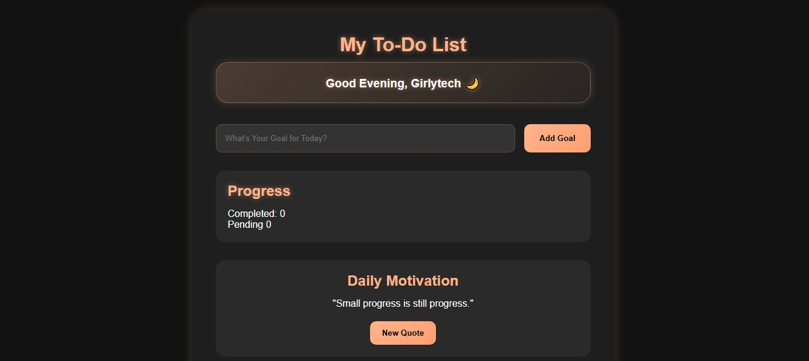
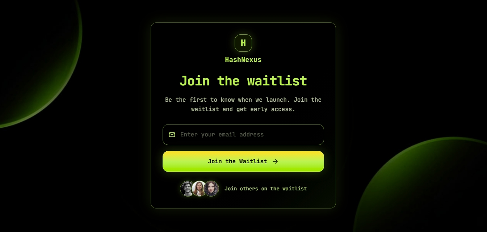
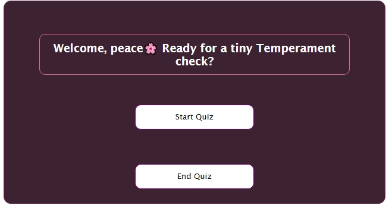

Website
Shopping Cart Website
An E-commerce Shopping website

Website
The Glass Grind cafe
A coffee shop Website

Website
To-doList
A Functional To-Do List App

Website
WaitList
Responsive Web Application & UI System

Website
Gustogroove
Responsive Web Application & UI System

My university Portal (cloned)
A cloned Version of my University's Portal

Quiz App (Temperament Check)
An interactive quiz application that evaluates user responses and generates real-time results.